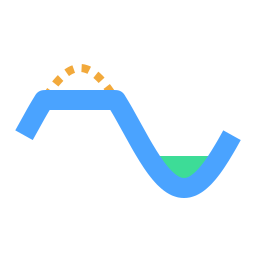
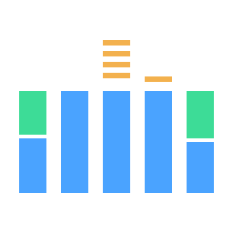
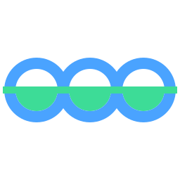
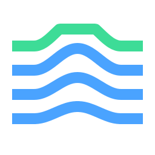
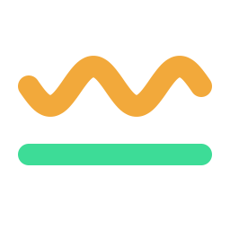

Rough sketches, not polished. Palette from index.html: navy #080c12 · water #4aa3ff · green (stored) #3ddc97 · amber (peak) #f2a93b. Lettering is drawn from geometric strokes (no font).
A day's load curve: the crest is cut flat and the cut piece fills the valley.

The day as slot bars: tall evening bars are cut at one line, the cut tops refill the short bars.

Lowercase tameru whose m has its two humps shaved flat to the x-height.
Custom caps: the A's apex is cut flat (no peak) and its crossbar is the water line.

Every bowl in tameru (a, e, u) holds water to the exact same level: farms linked.
Three farms threaded on one water line, all filled to the same height (kizuna).

The t's crossbar runs across the whole word as the feeder's limit; no letter crosses it.
Cap Bon field furrows seen from above, bent into the load curve with the top row cut flat.

A geometric dromedary: the hump is stored reserve that carries it through the hard hours.

A restless demand wave above one calm line: the grid Tameru keeps flat (reads as ≃).
